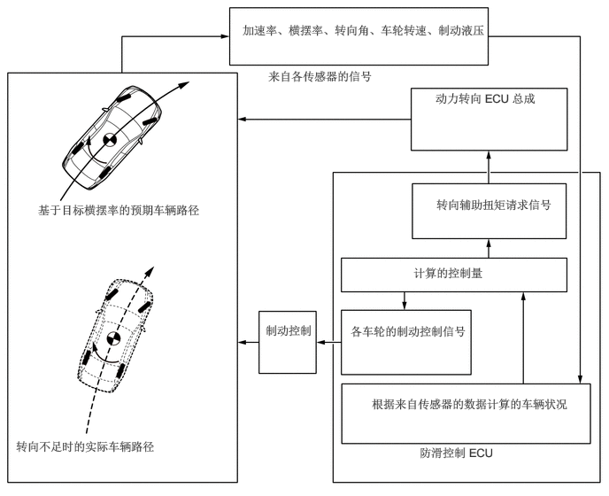
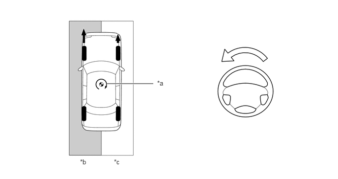
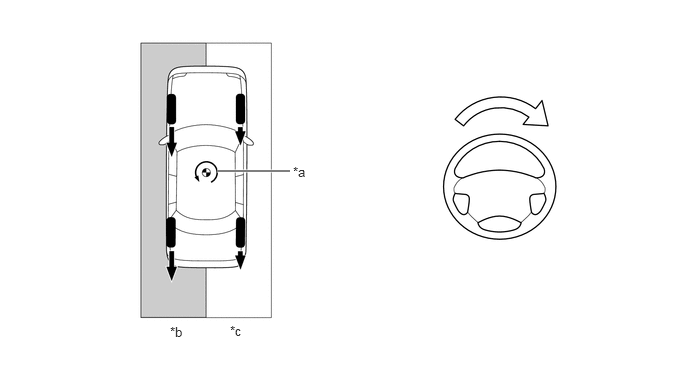
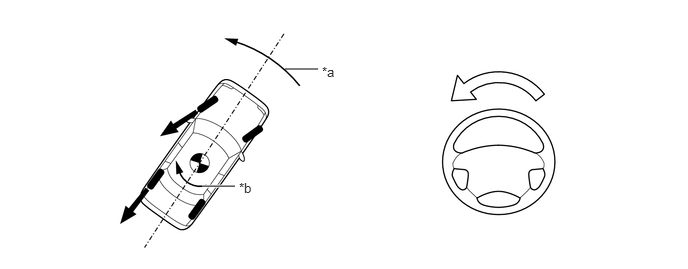
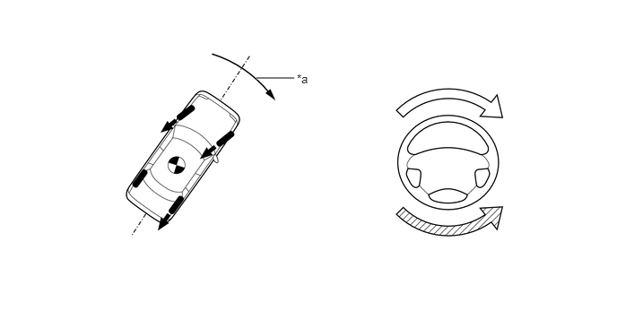

NM35K0CC
_54
制动
_079357
制动控制/动态控制系统
_0384806
制动控制系统（HV 车型）
CO
控制
F
制动控制/动态控制系统 制动控制系统（HV 车型） 控制 带 EPS 协同控制
系统控制
a.
转向协同控制集成了制动系统和动力转向系统的控制以实现卓越的车辆稳定性和平稳控制。
b.
在组合摩擦道路上加速或制动时，或者车辆转向不足或转向过度时，转向协同控制根据情况操作各系统并控制转向辅助扭矩以促使驾驶员进行校正转向。
转向协同控制概述

0.188,5.167 3.125,5.635
2.927,0.458
10
false
转向不足时的实际车辆路径
0.448,2.385 2.552,2.823
2.094,0.427
10
false
基于目标横摆率的预期车辆路径
2.854,0.271 5.906,0.854
3.042,0.573
10
false
加速率、横摆率、转向角、车轮转速、制动液压
3.156,0.813 4.885,1.052
1.719,0.229
10
false
来自各传感器的信号
5.125,1.073 6.417,1.427
1.281,0.344
10
false
动力转向 ECU 总成
5.135,2.323 6.917,3.063
1.771,0.729
10
false
转向辅助扭矩请求信号
4.865,3.125 6.792,3.438
1.917,0.302
10
false
计算的控制量
4.125,3.813 5.563,4.208
1.427,0.385
10
false
各车轮的制动控制信号
4.375,4.667 6.698,5.115
2.313,0.438
10
false
根据来自传感器的数据计算的车辆状况
3.125,3.802 3.781,4.281
0.646,0.469
10
false
制动控制
4.938,5.24 6.302,5.542
1.354,0.292
10
false
防滑控制 ECU
c.
组合摩擦道路上的加速控制
i.
在组合摩擦道路上加速时（如左侧车轮在沥青上，右侧车轮在雪上时），车辆容易向摩擦较小的一侧偏转。除常规 TRC 系统控制外，转向协同控制控制转向辅助扭矩以促使驾驶员进行校正转向以抵消左右车轮驱动力差所产生的横摆力矩。
组合摩擦道路上的加速控制

2.26,1.781 3.25,1.781
true
3.333,1.688 3.646,1.844
0.313,0.156
10
false
*a
1.698,3.365 2.01,3.521
0.313,0.156
10
false
*b
2.417,3.365 2.729,3.521
0.313,0.156
10
false
*c
| *a | 左右车轮驱动力差所产生的横摆力矩 | *b | 高摩擦路面 |
| *c | 低摩擦路面 | - | - |

|
驱动力 | 
|
消除左右车轮驱动力差所产生的横摆力矩所需的转向辅助扭矩 |
d.
组合摩擦道路上的制动控制
i.
在组合摩擦道路上进行制动时（如左侧车轮在沥青路面上，右侧车轮在积雪路面上时），车辆容易向摩擦较大的一侧偏转。除常规 ABS 系统控制外，转向协同控制控制转向辅助扭矩以促使驾驶员进行校正转向以抵消左右车轮制动力差所产生的横摆力矩。
组合摩擦道路上的制动控制

2.26,1.781 3.021,1.781
true
3.052,1.708 3.365,1.865
0.313,0.156
10
false
*a
1.771,3.375 2.083,3.531
0.313,0.156
10
false
*b
2.396,3.365 2.708,3.521
0.313,0.156
10
false
*c
| *a | 左右车轮制动力差所产生的横摆力矩 | *b | 高摩擦路面 |
| *c | 低摩擦路面 | - | - |
|
|
制动力 |
|
消除左右车轮制动力差所产生的横摆力矩所需的转向辅助扭矩 |
e.
车辆转向过度时的控制
i.
为确定车辆是否转向过度，车辆根据转向角和车速对比目标横摆率和实际横摆率的打滑角度。如果判定车辆转向过度，则车辆主要控制外侧车轮的制动力以产生朝向转弯外侧的力矩，从而使过度转向降至最低。此外，转向协同控制控制转向辅助扭矩以促使驾驶员进行校正转向。
车辆转向过度时的控制

2.969,0.719 3.313,0.719
false
2.104,1.938 2.448,1.938
true
3.354,0.667 3.667,0.823
0.313,0.156
10
false
*a
2.49,1.875 2.802,2.031
0.313,0.156
10
false
*b
| *a | 车辆转向过度时的控制力矩 | *b | 横摆 |
|
|
制动力 |
|
在此方向施加转向辅助扭矩以控制车辆转向不足 |
f.
车辆转向不足时的控制
i.
为确定车辆是否转向不足，车辆根据转向角和车速对比目标横摆率和实际横摆率。如果判定车辆转向不足，则车辆限制驱动力并控制各车轮的制动力以产生对准车辆及其目标路径的力矩，从而使转向不足降至最低。此外，转向协同控制控制转向辅助扭矩以促使驾驶员不要过度转动方向盘。
车辆转向不足时的控制

2.979,0.906 3.417,0.906
true
3.448,0.833 3.76,0.99
0.313,0.156
10
false
*a
| *a | 车辆转向不足时的控制力矩 | - | - |
|
|
通过 VSC 控制 |
|
转向不足时，转向辅助扭矩使方向盘易于转动从而有助于车辆稳定性的方向 |
| 转向不足时，导致车辆稳定性降低时难以进一步转动方向盘的反向力 | - | - |